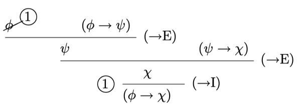
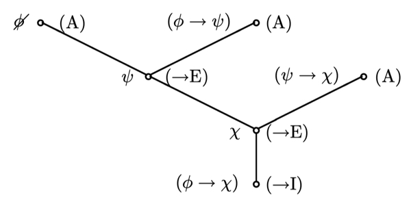

Derivations
The natural deduction rules for propositional logic:
Here is an example of a derivation:

Formally, a derivation is a left-and-right labelled tree:
Derivation
Let \(\sigma\) be a signature. Then a \(\sigma\)-derivation or, for short, a derivation is a left-and-right-labelled tree (drawn branching upwards) such that the following hold:
- Every node has arity 0, 1, 2 or 3.
- Every left label is either a formula of \(LP(\sigma)\), or a formula of \(LP(\sigma)\) with a dandah.
- Every node of arity 0 carries the right-hand label (A).
-
If \(\nu\) is a node of arity 1, then one of the following holds:
a. \(\nu\) has right-hand label (\(\rightarrow\)I), and for some formulas \(\varphi\) and \(\psi\), \(\nu\) has the left label \((\varphi\rightarrow\psi)\) and its daughter has the left label \(\psi\);
b. \(\nu\) has right-hand label (\(\neg\)I) or (RAA), the daughter of \(\nu\) has left label \(\bot\), and if the right-hand label on \(\nu\) is (\(\neg\)I) then the left label on \(\nu\) is of the form \((\neg\varphi)\).
c.,d.,e. Similar clauses for (\(\wedge\)E), (\(\vee\)I) and (\(\leftrightarrow\)E) (left as an exercise).
-
If \(\nu\) is a node of arity 2, then one of the following holds:
a. \(\nu\) has right-hand label (\(\rightarrow\)E), and there are formulas \(\varphi\) and \(\psi\) such that \(\nu\) has the left label \(\psi\), and the left labels on the daughters of \(\nu\) are (from left to right) \(\varphi\) and \((\varphi\rightarrow\psi)\).
b., c, d. Similar clauses for (\(\wedge\)I), (\(\rightarrow\)E) and (\(\leftrightarrow\)I) (left as an exercise).
-
If \(\nu\) is a node of arity 3, then the right-hand label on \(\nu\) is (\(\vee\)E), and there are formulas \(\varphi\), \(\psi\) such that the leftmost daughter of \(\nu\) is a leaf with left label \((\varphi \vee \psi)\), and the other two daughters of \(\nu\) carry the same left label as \(\nu\)
-
If a node \(\mu\) has left label \(\chi\) with a dandah, then \(\mu\) is a leaf, and the branch to \(\mu\) contains a node \(\nu\) where one of the following happens:
a. Case 4.a occurs with formulas \(\varphi\) and \(\psi\), and \(\varphi\) is \(\chi\),
b. Case 4.b occurs; if the right-hand label on \(\nu\) is (\(\neg\)I) then the left label on \(\nu\) is \((\neg\chi)\), while if it is (RAA) then \(\chi\) is \((\neg\varphi)\) where \(\varphi\) is the left label on \(\nu\).
c. \(\nu\) has label (\(\vee\)E) with formulas \(\varphi\) and \(\psi\) as in Case 6., and either \(\chi\) is \(\varphi\) and the path from the root to \(\nu\) goes through the middle daughter of \(\nu\), or \(\chi\) is \(\psi\) and the path goes through the right-hand daughter.
The conclusion of the derivation is the left label on its root, and its undischarged assumptions are all the formulas that appear without dandahs as left labels on leaves. The derivation is a derivation of its conclusion.
Using the above definition, the derivation above is represented as the following tree:

Sequent
Let \(\sigma\) be a signature. A \(\sigma\)-sequent, or sequent for short, is an expression
where \(\varphi\) is a formula (called the conclusion) of \(LP(\sigma)\) and \(\Gamma\) (called the assumptions) is a set of formulas of \(LP(\sigma)\). We write \(\Gamma\vdash \varphi\) when \(\sigma\) is unimportant or clear from context.
We say \(\Gamma\vdash_\sigma\varphi\) is correct when there is a \(\sigma\)-derivation with conclusion \(\varphi\) and whose undischarged assumptions are all in \(\Gamma\).
We write \(\vdash \varphi\) when there is a \(\sigma\)-derivation with conclusion \(\varphi\) and there are no undischarged assumptions.
We note the following properties of \(\vdash\):
- \(\Gamma\cup\{\varphi\}\vdash\bot\) is correct if and only if \(\Gamma\vdash (\neg\varphi)\) is correct.
- Axiom Rule: If \(\psi\in\Gamma\), then \(\Gamma\vdash\psi\)
- Monotonicity: If \(\Gamma\subseteq \Delta\) and \(\Gamma\vdash \psi\) is correct, then \(\Delta\vdash\psi\) is correct.
- Transitivity: If \(\Delta\vdash\psi\) is correct and for every \(\chi\in\Delta\), \(\Gamma\vdash\chi\) is correct, then \(\Gamma\vdash\psi\) is correct.
- The Cut Rule: If \(\Gamma\vdash\varphi\) is correct and \(\Gamma\cup\{\varphi\}\vdash\psi\) is correct, then \(\Gamma\vdash\psi\) is correct.
- Deduction Theorem: If \(\Gamma\cup\{\varphi\}\vdash\psi\), then \(\Gamma\vdash (\varphi\rightarrow\psi)\).
Examples of Derivations